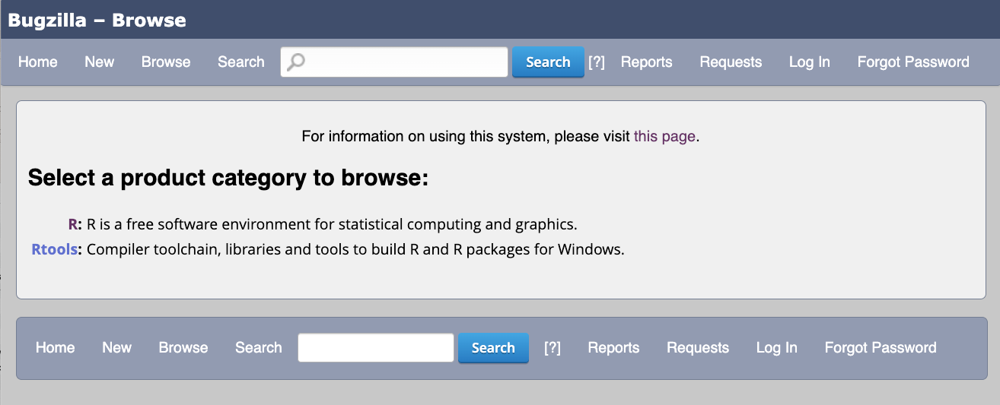
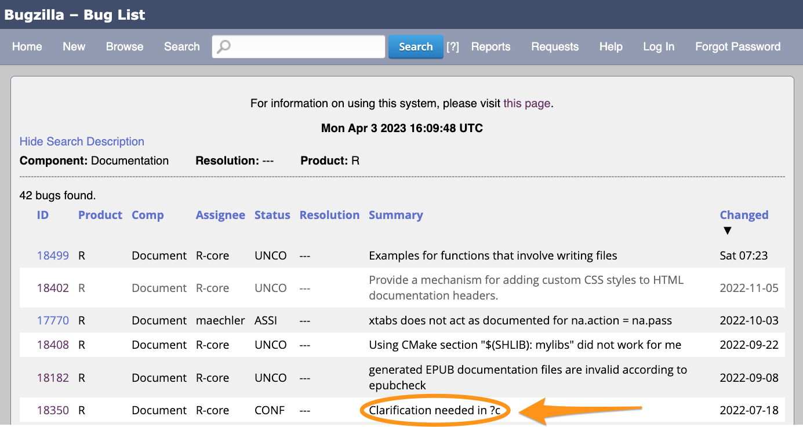
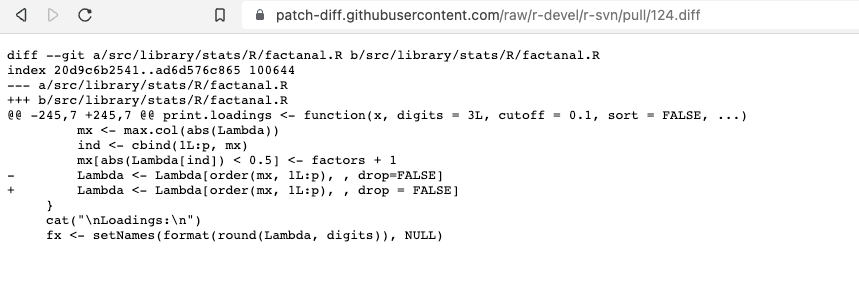

How to Make a Contribution to Base R
April 14, 2022
Contributing to R
R is maintained by the R Core Team
Members of the R Community can contribute in various ways:
- Analysing and fixing bugs
- Translating R’s messages, warnings and errors
- Testing pre-release versions of R
- Developing new features
In this demo we’ll focus on bug fixing!
How to find a good bug to work on
Bugzilla, https://bugs.r-project.org






What to look for
Good: a bug report where the next step is clear.
- A minimimal reproducible example
- Checking in R-devel
- A diagnosis
- A fix
Even better: an R Core member supports the next step in a comment.
What to avoid
- Too new
- Too old
- Commenters disagree on how to fix
- Someone else is clearly working on it
- Clearly requires specific expertise you lack
Shortcuts
Get help finding a good first issue:
- R Contributor Office Hours
- R Contributor Slack #work-out-loud channel
- Bug BBQ
Getting to the root of the issue
Bug 17863
See report on Bugzilla:
https://bugs.r-project.org/show_bug.cgi?id=17863
A 1-factor factor analysis:
Printing the result
Good
Call:
factanal(x = mtcars[, 1:4], factors = 1)
Uniquenesses:
mpg cyl disp hp
0.199 0.078 0.120 0.261
Loadings:
Factor1
mpg -0.895
cyl 0.960
disp 0.938
hp 0.859
Factor1
SS loadings 3.342
Proportion Var 0.835
Test of the hypothesis that 1 factor is sufficient.
The chi square statistic is 0.5 on 2 degrees of freedom.
The p-value is 0.777 Bad
Call:
factanal(x = mtcars[, 1:4], factors = 1)
Uniquenesses:
mpg cyl disp hp
0.199 0.078 0.120 0.261
Loadings:
[1] -0.895 0.960 0.938 0.859
Factor1
SS loadings 3.342
Proportion Var 0.835
Test of the hypothesis that 1 factor is sufficient.
The chi square statistic is 0.5 on 2 degrees of freedom.
The p-value is 0.777 Finding the print method (1)
A single object matching 'print.factanal' was found
It was found in the following places
registered S3 method for print from namespace stats
namespace:stats
with value
function (x, digits = 3, ...)
{
cat("\nCall:\n", deparse(x$call), "\n\n", sep = "")
cat("Uniquenesses:\n")
print(round(x$uniquenesses, digits), ...)
print(x$loadings, digits = digits, ...)
if (!is.null(x$rotmat)) {
tmat <- solve(x$rotmat)
R <- tmat %*% t(tmat)
factors <- x$factors
rownames(R) <- colnames(R) <- paste0("Factor", 1:factors)
if (TRUE != all.equal(c(R), c(diag(factors)))) {
cat("\nFactor Correlations:\n")
print(R, digits = digits, ...)
}
}
if (!is.null(x$STATISTIC)) {
factors <- x$factors
cat("\nTest of the hypothesis that", factors, if (factors ==
1)
"factor is"
else "factors are", "sufficient.\n")
cat("The chi square statistic is", round(x$STATISTIC,
2), "on", x$dof, if (x$dof == 1)
"degree"
else "degrees", "of freedom.\nThe p-value is", signif(x$PVAL,
3), "\n")
}
else {
cat(paste("\nThe degrees of freedom for the model is",
x$dof, "and the fit was", round(x$criteria["objective"],
4), "\n"))
}
invisible(x)
}
<bytecode: 0x1179d1ec8>
<environment: namespace:stats>Finding the print method (2)
A single object matching 'print.loadings' was found
It was found in the following places
registered S3 method for print from namespace stats
namespace:stats
with value
function (x, digits = 3L, cutoff = 0.1, sort = FALSE, ...)
{
Lambda <- unclass(x)
p <- nrow(Lambda)
factors <- ncol(Lambda)
if (sort) {
mx <- max.col(abs(Lambda))
ind <- cbind(1L:p, mx)
mx[abs(Lambda[ind]) < 0.5] <- factors + 1
Lambda <- Lambda[order(mx, 1L:p), ]
}
cat("\nLoadings:\n")
fx <- setNames(format(round(Lambda, digits)), NULL)
nc <- nchar(fx[1L], type = "c")
fx[abs(Lambda) < cutoff] <- strrep(" ", nc)
print(fx, quote = FALSE, ...)
vx <- colSums(x^2)
varex <- rbind(`SS loadings` = vx)
if (is.null(attr(x, "covariance"))) {
varex <- rbind(varex, `Proportion Var` = vx/p)
if (factors > 1)
varex <- rbind(varex, `Cumulative Var` = cumsum(vx/p))
}
cat("\n")
print(round(varex, digits))
invisible(x)
}
<bytecode: 0x117955c38>
<environment: namespace:stats>Debugging print.loadings
Call:
factanal(x = mtcars[, 1:4], factors = 1)
Uniquenesses:
mpg cyl disp hp
0.199 0.078 0.120 0.261
debugging in: print.loadings(x$loadings, digits = digits, ...)
debug: {
Lambda <- unclass(x)
p <- nrow(Lambda)
factors <- ncol(Lambda)
if (sort) {
mx <- max.col(abs(Lambda))
ind <- cbind(1L:p, mx)
mx[abs(Lambda[ind]) < 0.5] <- factors + 1
Lambda <- Lambda[order(mx, 1L:p), ]
}
cat("\nLoadings:\n")
fx <- setNames(format(round(Lambda, digits)), NULL)
nc <- nchar(fx[1L], type = "c")
fx[abs(Lambda) < cutoff] <- strrep(" ", nc)
print(fx, quote = FALSE, ...)
vx <- colSums(x^2)
varex <- rbind(`SS loadings` = vx)
if (is.null(attr(x, "covariance"))) {
varex <- rbind(varex, `Proportion Var` = vx/p)
if (factors > 1)
varex <- rbind(varex, `Cumulative Var` = cumsum(vx/p))
}
cat("\n")
print(round(varex, digits))
invisible(x)
}
Browse[2]> Press Enter to step through line by line
Browse[2]>
debug: Lambda <- unclass(x)Browse[2]>
debug: p <- nrow(Lambda)Browse[2]>
debug: factors <- ncol(Lambda)Browse[2]>
debug: if (sort) {
mx <- max.col(abs(Lambda))
ind <- cbind(1L:p, mx)
mx[abs(Lambda[ind]) < 0.5] <- factors + 1
Lambda <- Lambda[order(mx, 1L:p), ]
}Browse[2]>
debug: mx <- max.col(abs(Lambda))Browse[2]>
debug: ind <- cbind(1L:p, mx)Browse[2]>
debug: mx[abs(Lambda[ind]) < 0.5] <- factors + 1Browse[2]>
debug: Lambda <- Lambda[order(mx, 1L:p), ]Print objects
Browse[2]> Lambda[order(mx, 1L:p), ]
mpg cyl disp hp
-0.8947285 0.9603623 0.9381177 0.8594404 Browse[2]> Lambda
Factor1
mpg -0.8947285
cyl 0.9603623
disp 0.9381177
hp 0.8594404Browse[2]> Lambda[order(mx, 1L:p), , drop = FALSE]
Factor1
mpg -0.8947285
cyl 0.9603623
disp 0.9381177
hp 0.8594404
Browse[2]> Modify function
print.loadings <- function (x, digits = 3L, cutoff = 0.1, sort = FALSE, ...)
{
Lambda <- unclass(x)
p <- nrow(Lambda)
factors <- ncol(Lambda)
if (sort) {
mx <- max.col(abs(Lambda))
ind <- cbind(1L:p, mx)
mx[abs(Lambda[ind]) < 0.5] <- factors + 1
Lambda <- Lambda[order(mx, 1L:p), , drop = FALSE]
}
cat("\nLoadings:\n")
fx <- setNames(format(round(Lambda, digits)), NULL)
nc <- nchar(fx[1L], type = "c")
fx[abs(Lambda) < cutoff] <- strrep(" ", nc)
print(fx, quote = FALSE, ...)
vx <- colSums(x^2)
varex <- rbind(`SS loadings` = vx)
if (is.null(attr(x, "covariance"))) {
varex <- rbind(varex, `Proportion Var` = vx/p)
if (factors > 1)
varex <- rbind(varex, `Cumulative Var` = cumsum(vx/p))
}
cat("\n")
print(round(varex, digits))
invisible(x)
}Check
How to propose a fix
Comment on Bugzilla
(Requires an account)
Create a patch via GitHub
Alternatively, create a patch using the r-svn mirror of the R sources: https://github.com/r-devel/r-svn
Find source file to edit
This will create a fork of the r-svn repo on your GitHub account.
Edit the code in the browser
Committing changes will create a branch on your fork
Open a PR (1)
Open a PR (2)
Automated checks
Create a patch
Add .diff to the URL for your PR, e.g. https://github.com/r-devel/r-svn/pull/124.diff

Right-click to save .diff file.
This patch can be attached to the Bugzilla report, with a comment.
Where next?
Links
R Contributor Office Hours: https://contributor.r-project.org/events/office-hours/
R Contributor Slack: https://contributor.r-project.org/slack
How to get a Bugzilla account: https://contributor.r-project.org/rdevguide/BugTrack.html#RCorePkgBug
R Development Guide: https://contributor.r-project.org/rdevguide/
Slides for this demo: https://hturner.github.io/contributing-demo